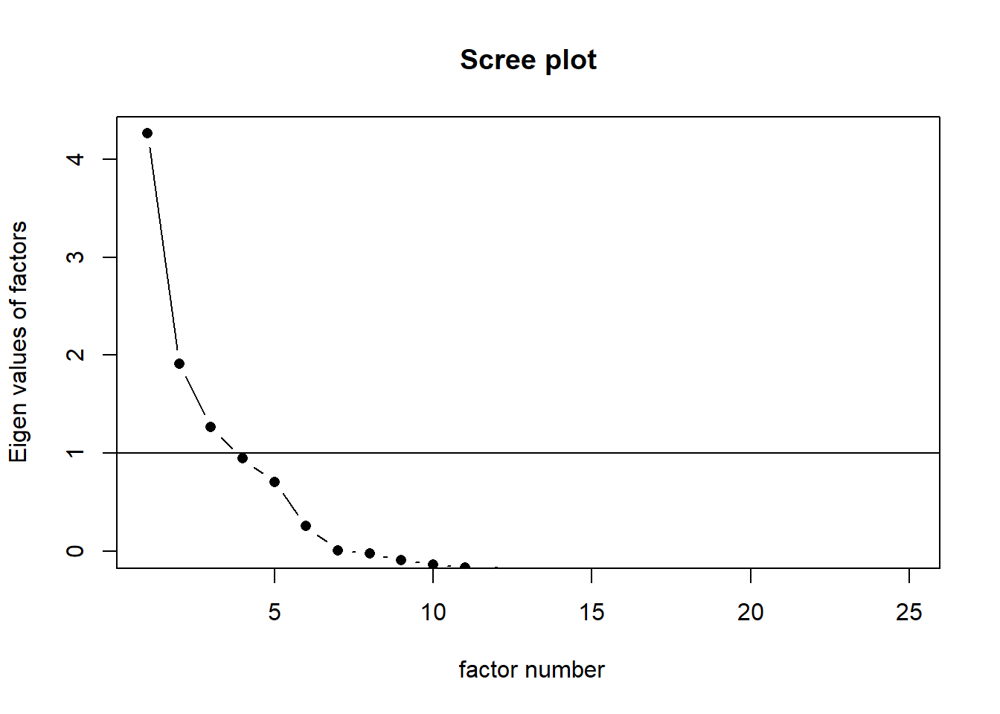
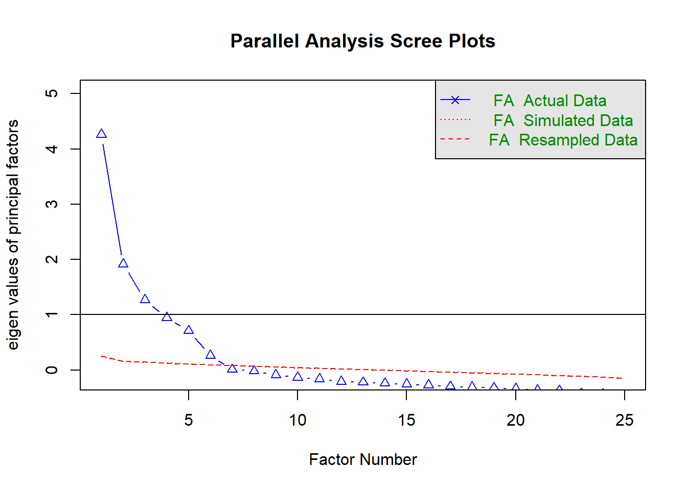
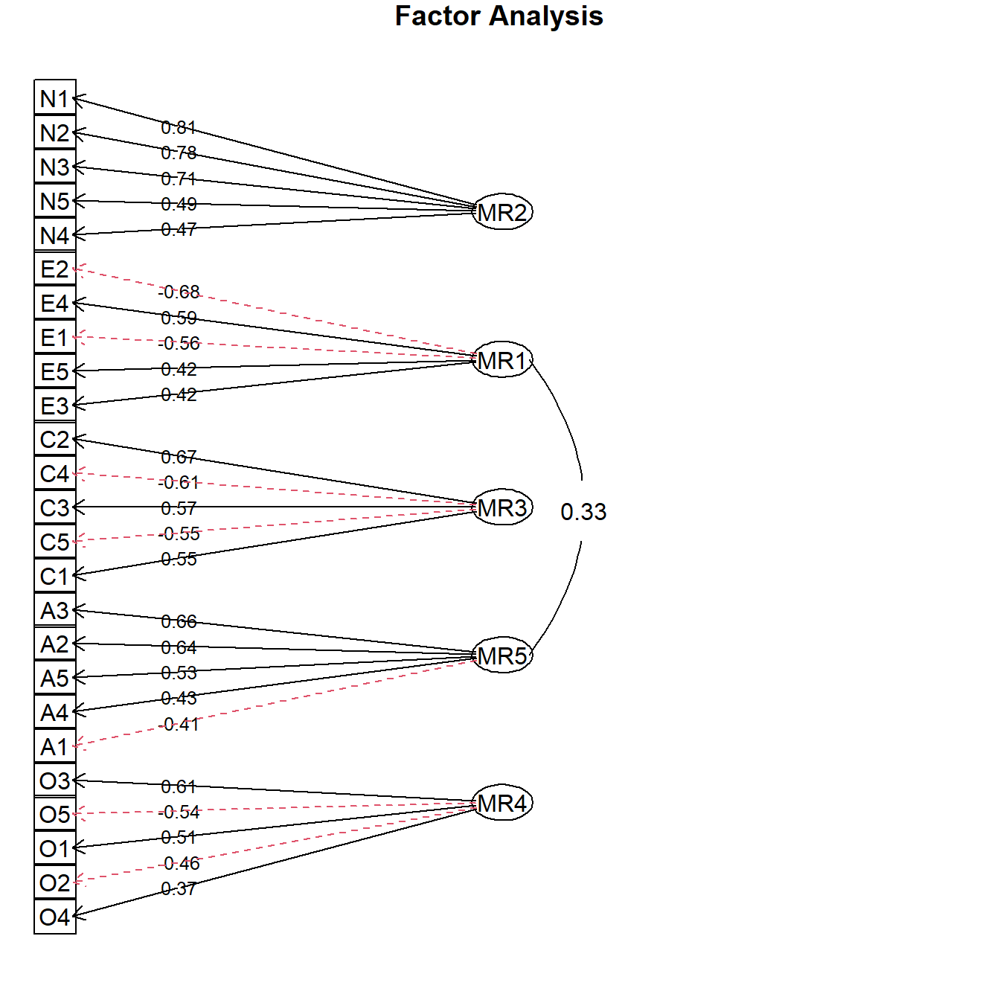
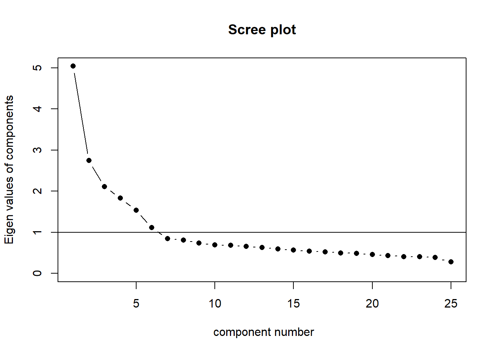
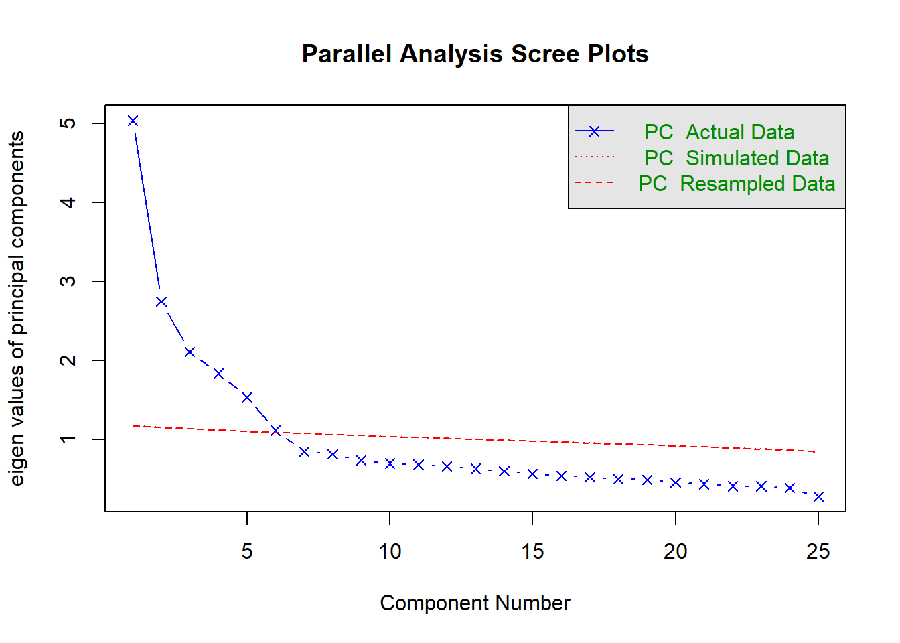

# loading librarylibrary(psych)library(dplyr) # for data manipulations
Warning: package 'dplyr' was built under R version 4.2.3
Attaching package: 'dplyr'
The following objects are masked from 'package:stats':
filter, lag
The following objects are masked from 'package:base':
intersect, setdiff, setequal, union
Exercises
Open RStudio in your practicals project. Create a new script to work with in this second practical related to modelling. Figure out a naming so you would be able to find it back.
We will load some data now. Consider replacing the data with some of your own so the exercises become more relevant to you.
We will use example data from the psych package. The bfi dataset. For more details see ?bfi. When you use either data from a package or a specific function, you will see at the bottom of the help file a section with examples. This can be very useful! In this case, the help file for bfi would show you how to use multiple scales from this data and analyse them at the same time using the scoreItems() function. You can play with that if you want. We will first focus on a single scale now.
Now get only the data related to neuroticism and investigate a bit more.
Code
# the paste part is a lazy way for writing (c("N1", "N2", "N3", "N4", "N5"))# you can play with these sort of things or just write it out fullyneuroticism <-select(data, paste0("N", 1:5))summary(neuroticism)
N1 N2 N3 N4 N5
Min. :1.000 Min. :1.000 Min. :1.000 Min. :1.000 Min. :1.00
1st Qu.:2.000 1st Qu.:2.000 1st Qu.:2.000 1st Qu.:2.000 1st Qu.:2.00
Median :3.000 Median :4.000 Median :3.000 Median :3.000 Median :3.00
Mean :2.929 Mean :3.508 Mean :3.217 Mean :3.186 Mean :2.97
3rd Qu.:4.000 3rd Qu.:5.000 3rd Qu.:4.000 3rd Qu.:4.000 3rd Qu.:4.00
Max. :6.000 Max. :6.000 Max. :6.000 Max. :6.000 Max. :6.00
NA's :22 NA's :21 NA's :11 NA's :36 NA's :29
Code
round(cor(neuroticism, use ="pairwise.complete.obs"), 2)
Interpret the results: What is the value of Cronbach’s alpha? Is it within an acceptable range? (Note: Generally, a value above 0.7 is considered acceptable.)
5. You can see the Reliablilty if an item is dropped in the output. Verify if it is correct for on of these.
Code
# get alpha for all variables, minus the first column# this should be 0.76 according to the output beforealpha(neuroticism[, -1])
Now let’s take a look at the example as given in the help file of the data ?bfi. That provides a nice example of what more you could do with reliability analysis is R. If you want to see more examples, investigate what functions are in the package and see their help files for examples.
# from the ?bfi help file:data(bfi)psych::describe(bfi)
# create the bfi.keys (actually already saved in the data file)keys <-list(agree=c("-A1","A2","A3","A4","A5"),conscientious=c("C1","C2","C3","-C4","-C5"),extraversion=c("-E1","-E2","E3","E4","E5"),neuroticism=c("N1","N2","N3","N4","N5"),openness =c("O1","-O2","O3","O4","-O5")) scores <- psych::scoreItems(keys,bfi,min=1,max=6) #specify the minimum and maximum valuesscores
Call: psych::scoreItems(keys = keys, items = bfi, min = 1, max = 6)
(Unstandardized) Alpha:
agree conscientious extraversion neuroticism openness
alpha 0.7 0.72 0.76 0.81 0.6
Standard errors of unstandardized Alpha:
agree conscientious extraversion neuroticism openness
ASE 0.014 0.014 0.013 0.011 0.017
Average item correlation:
agree conscientious extraversion neuroticism openness
average.r 0.32 0.34 0.39 0.46 0.23
Median item correlation:
agree conscientious extraversion neuroticism openness
0.34 0.34 0.38 0.41 0.22
Guttman 6* reliability:
agree conscientious extraversion neuroticism openness
Lambda.6 0.7 0.72 0.76 0.81 0.6
Signal/Noise based upon av.r :
agree conscientious extraversion neuroticism openness
Signal/Noise 2.3 2.6 3.2 4.3 1.5
Scale intercorrelations corrected for attenuation
raw correlations below the diagonal, alpha on the diagonal
corrected correlations above the diagonal:
agree conscientious extraversion neuroticism openness
agree 0.70 0.36 0.63 -0.245 0.23
conscientious 0.26 0.72 0.35 -0.305 0.30
extraversion 0.46 0.26 0.76 -0.284 0.32
neuroticism -0.18 -0.23 -0.22 0.812 -0.12
openness 0.15 0.19 0.22 -0.086 0.60
In order to see the item by scale loadings and frequency counts of the data
print with the short option = FALSE
This provides very extensitve output, wonderful. Did you also notice that in the keys some - were used to make sure the data are coded in the correct direction?
Now let’s continue and see if the scales we used would also come out of EFA and PCA.
Exploratory Factor Analysis
6. Determine the appropriate number of factors to extract using parallel analysis or a scree plot.
Code
# notice that only the first 25 columns relate to the items# gender, education and age should not be includedscree(data[, 1:25], factors =TRUE, pc =FALSE)

Code
# alternative way to omit those variablefa.parallel(data[, -c(26:28)], fa ="fa")

Parallel analysis suggests that the number of factors = 6 and the number of components = NA
Would you now have found the same 5 factors?
7. Run EFA for 3, 5 and 6 factors. Compare the results. Consider a rotation you’d like to use. Would you like to allow the factors to be correlated (e.g. oblimin) or not (e.g. varimax). Note. The presented solution below depends on some choices and is not the only correct one!
Code
# run the models, print one output as exampleefa3 <-fa(data[, 1:25], nfactors =3, rotate ="oblimin")
Factor Analysis using method = minres
Call: fa(r = data[, 1:25], nfactors = 5, rotate = "oblimin")
Standardized loadings (pattern matrix) based upon correlation matrix
MR2 MR1 MR3 MR5 MR4 h2 u2 com
A1 0.21 0.17 0.07 -0.41 -0.06 0.19 0.81 2.0
A2 -0.02 0.00 0.08 0.64 0.03 0.45 0.55 1.0
A3 -0.03 0.12 0.02 0.66 0.03 0.52 0.48 1.1
A4 -0.06 0.06 0.19 0.43 -0.15 0.28 0.72 1.7
A5 -0.11 0.23 0.01 0.53 0.04 0.46 0.54 1.5
C1 0.07 -0.03 0.55 -0.02 0.15 0.33 0.67 1.2
C2 0.15 -0.09 0.67 0.08 0.04 0.45 0.55 1.2
C3 0.03 -0.06 0.57 0.09 -0.07 0.32 0.68 1.1
C4 0.17 0.00 -0.61 0.04 -0.05 0.45 0.55 1.2
C5 0.19 -0.14 -0.55 0.02 0.09 0.43 0.57 1.4
E1 -0.06 -0.56 0.11 -0.08 -0.10 0.35 0.65 1.2
E2 0.10 -0.68 -0.02 -0.05 -0.06 0.54 0.46 1.1
E3 0.08 0.42 0.00 0.25 0.28 0.44 0.56 2.6
E4 0.01 0.59 0.02 0.29 -0.08 0.53 0.47 1.5
E5 0.15 0.42 0.27 0.05 0.21 0.40 0.60 2.6
N1 0.81 0.10 0.00 -0.11 -0.05 0.65 0.35 1.1
N2 0.78 0.04 0.01 -0.09 0.01 0.60 0.40 1.0
N3 0.71 -0.10 -0.04 0.08 0.02 0.55 0.45 1.1
N4 0.47 -0.39 -0.14 0.09 0.08 0.49 0.51 2.3
N5 0.49 -0.20 0.00 0.21 -0.15 0.35 0.65 2.0
O1 0.02 0.10 0.07 0.02 0.51 0.31 0.69 1.1
O2 0.19 0.06 -0.08 0.16 -0.46 0.26 0.74 1.7
O3 0.03 0.15 0.02 0.08 0.61 0.46 0.54 1.2
O4 0.13 -0.32 -0.02 0.17 0.37 0.25 0.75 2.7
O5 0.13 0.10 -0.03 0.04 -0.54 0.30 0.70 1.2
MR2 MR1 MR3 MR5 MR4
SS loadings 2.57 2.20 2.03 1.99 1.59
Proportion Var 0.10 0.09 0.08 0.08 0.06
Cumulative Var 0.10 0.19 0.27 0.35 0.41
Proportion Explained 0.25 0.21 0.20 0.19 0.15
Cumulative Proportion 0.25 0.46 0.66 0.85 1.00
With factor correlations of
MR2 MR1 MR3 MR5 MR4
MR2 1.00 -0.21 -0.19 -0.04 -0.01
MR1 -0.21 1.00 0.23 0.33 0.17
MR3 -0.19 0.23 1.00 0.20 0.19
MR5 -0.04 0.33 0.20 1.00 0.19
MR4 -0.01 0.17 0.19 0.19 1.00
Mean item complexity = 1.5
Test of the hypothesis that 5 factors are sufficient.
The degrees of freedom for the null model are 300 and the objective function was 7.23 with Chi Square of 20163.79
The degrees of freedom for the model are 185 and the objective function was 0.65
The root mean square of the residuals (RMSR) is 0.03
The df corrected root mean square of the residuals is 0.04
The harmonic number of observations is 2762 with the empirical chi square 1392.16 with prob < 5.6e-184
The total number of observations was 2800 with Likelihood Chi Square = 1808.94 with prob < 4.3e-264
Tucker Lewis Index of factoring reliability = 0.867
RMSEA index = 0.056 and the 90 % confidence intervals are 0.054 0.058
BIC = 340.53
Fit based upon off diagonal values = 0.98
Measures of factor score adequacy
MR2 MR1 MR3 MR5 MR4
Correlation of (regression) scores with factors 0.92 0.89 0.88 0.88 0.84
Multiple R square of scores with factors 0.85 0.79 0.77 0.77 0.71
Minimum correlation of possible factor scores 0.70 0.59 0.54 0.54 0.42
You can also look at the outputs of the others. Let’s see how we could visually investigate for instance the model with 5 factors.
Code
fa.diagram(efa5, digits =2, cut = .3)

Do you see that there is a large correlation between the A (agree) and E (extraversion) factors? Would this also occured if we had used rotate = "varimax"?
df d.df chiSq d.chiSq PR test empirical d.empirical test.echi BIC
1 185 NA 1808.94 NA NA NA 1392.16 NA NA 340.53
2 165 20 1032.48 776.47 0 38.82 639.91 752.25 37.61 -277.19
d.BIC
1 NA
2 -617.72
Should we now go for 6 factors? Maybe we should use a CFA if our theory was really 5? Did we want all those cross-loadings? That is all part of another practical.
Principal Component Analysis
8. Now try to determine the number of components for a PCA.
Code
# gender, education and age should not be includedscree(data[, 1:25], factors =FALSE, pc =TRUE)

Code
# alternative way to omit those variablefa.parallel(data[, -c(26:28)], fa ="pc")

Parallel analysis suggests that the number of factors = NA and the number of components = 6
9. Now follow the advice of the fa.parallel function and do a PCA analysis
Do you notice an essential difference between the plot for the EFA and the plot for the PCA? The arrows point the other way around. In EFA there are latent factors considered to produce the observed variables with a certain relationship. In PCA, the variables load on a certain component.
End of Practical 2 of modelling basics. You now practiced with reliability analysis, EFA and PCA. Try it out on your own data!